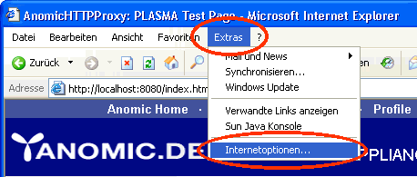
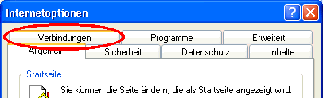
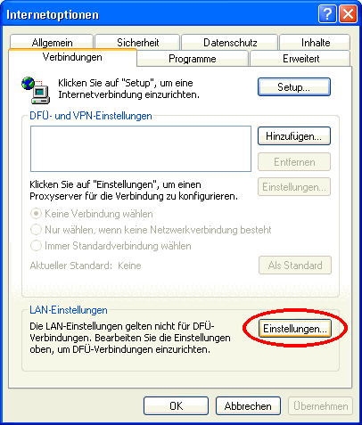
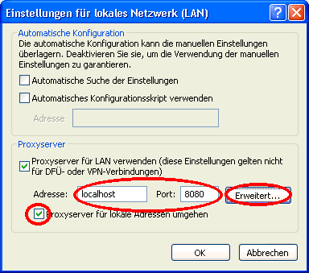
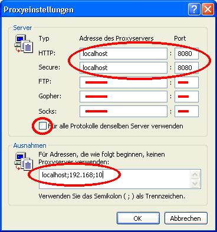

Run Installer
The Windows release comes with it's own Installer in a single file. Just double-click the Installer file.
If you upgrade from a previous version of YACY, please migrate your settings and data. This is very easy: simply move (not copy) your DATA directory from the application root directory of the old proxy installation to the new application root directory. If done so, you don't need to do the other remaining configuration steps below again.
Configure Browser
In your Internet Explorer, open 'Extras' -> 'Internet Options':

Select 'Connections':

Click on 'Settings' of the 'LAN-Settings', even if you are using a dial-up connection:

Check the 'Proxyserver' check-box:

Enter the location of YACY server. If YACY runs on the same machine as the Browser, set 'localhost'. If you have not changed the initial configuration, the port is '8080'. Check the 'No Proxy for local addess' button. Then hit 'Extended': 
Un-check the 'Use the same server for all protocols' - button. Then remove the proxy setting from 'FTP', 'Gopher' and 'Socks'. In the 'Exceptions' field, enter 'localhost;192.168;10': 
Close all windows by clicking on 'Ok'
Start YACY
The installer creates a link to the application on the desktop. Just double-click the 'YACY Console' icon.
Administrate YACY
After you started YACY, terminal-window will come up.
That's the application; no windows, no user interface.
You can now access YACY's administration interface by browsing to
http://localhost:8080
See the 'Settings' menu: you should set an administration password and checkt the access rules.
The default settings are fine, so please change them only if you know what they mean.
Use YACY and it's search service
Browse the internet using your web-browser. You should notice that your actions take effect as cache fill/cache hit log's in the httpProxy's terminal window. Whenever you vistited a page through the proxy, the page is indexed and can be search using the search page at http://localhost:8080. Please be aware that if your settings allow to access the http-server, then anybode else can also search your index as well. If you don't want this, you must set the 'IP-Number filter' of the 'Server Access Settings' in the 'Settings' menu to a string that applies to you local network scheme, like 'localhost,127.0.0.1,192.168*,10*', which should be fine in most cases.